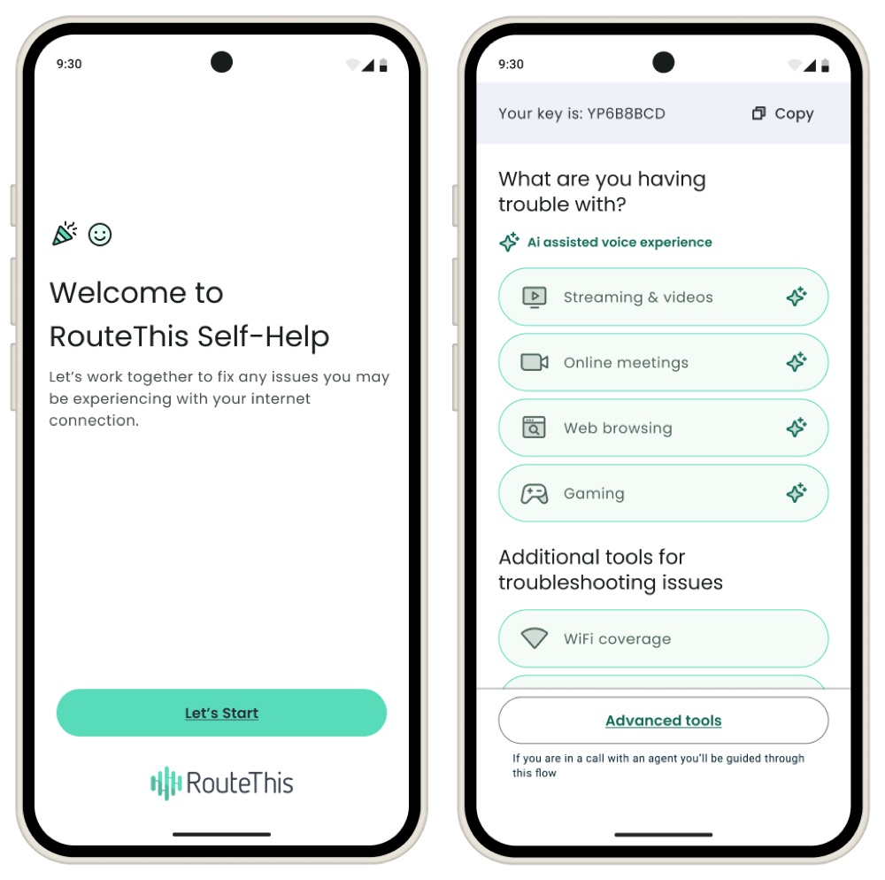
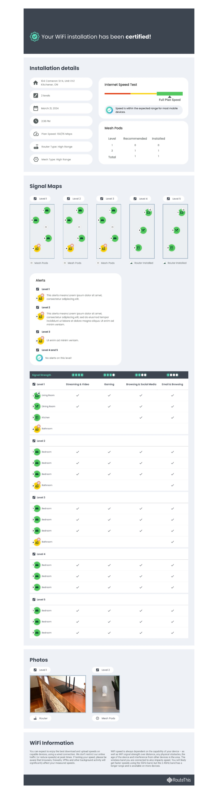
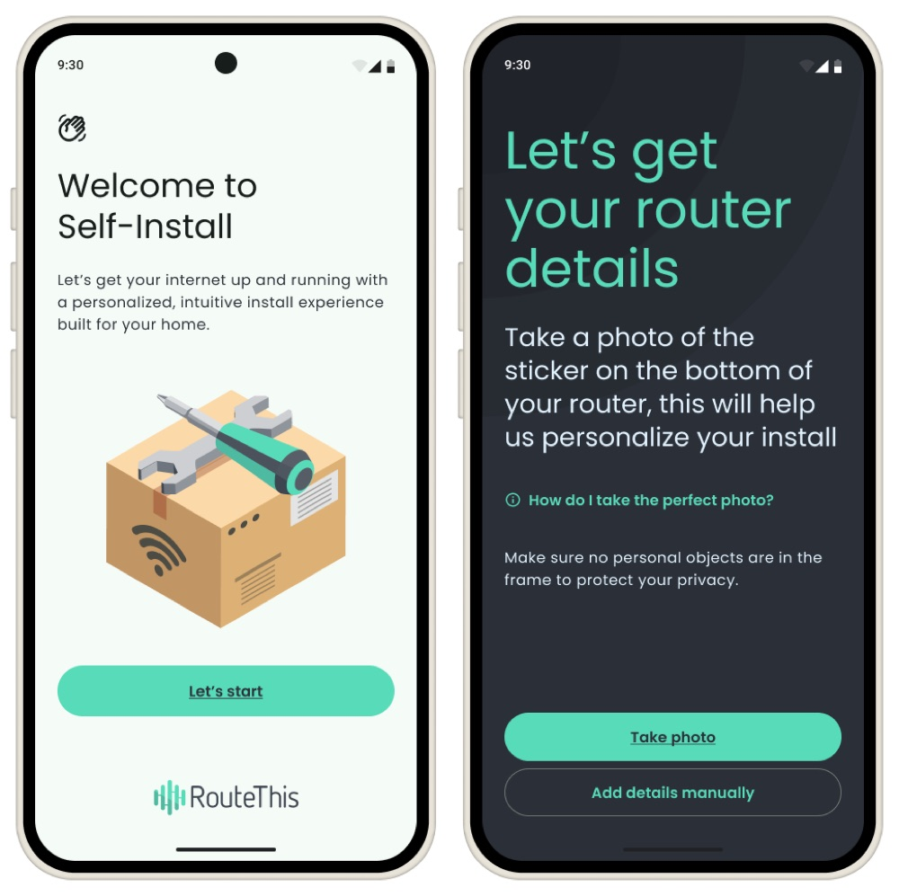
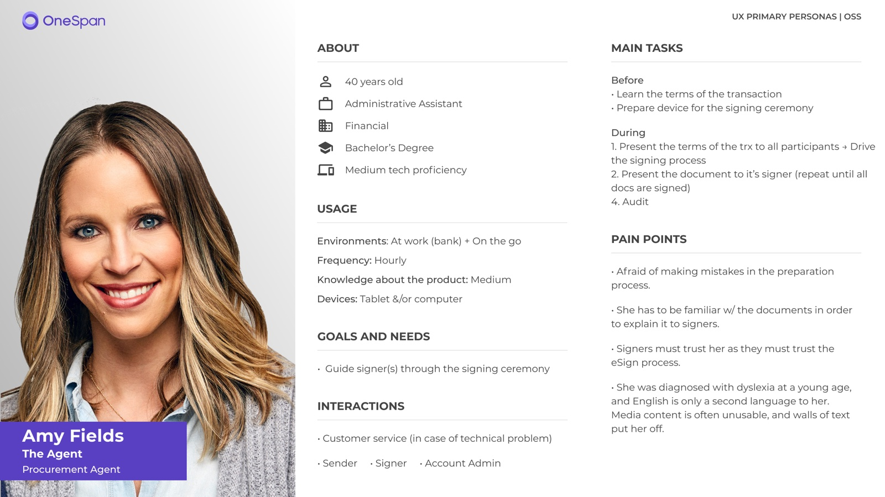
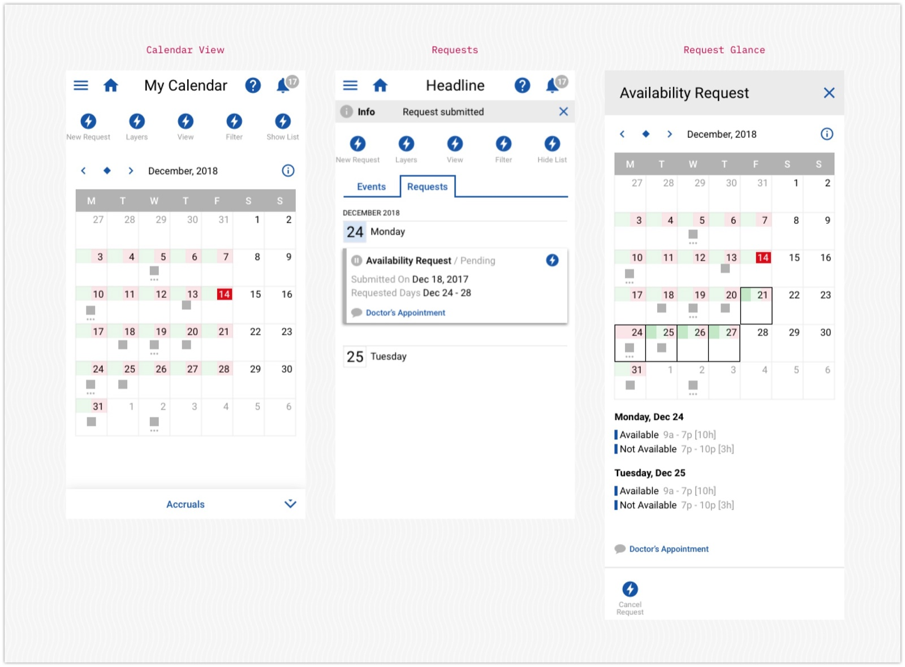
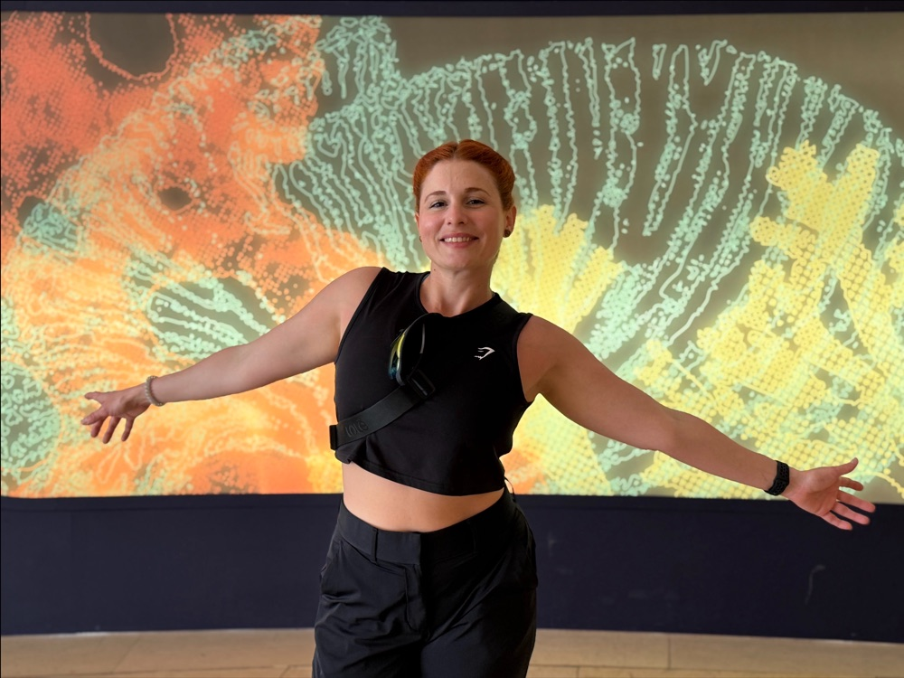

Hi, I'm Isa, I'm a product designer who believes design isn't just about functionality; it's also about making people feel awesome while they're using it. When design connects with emotion, the experience becomes more than functional; it becomes memorable.
This portfolio was designed and implemented with AI.
View selected workAI Practice
I believe AI is changing the way we work as designers, and I'm excited to be part of that change. This is how I've built it into my daily practice, from concept to working software.
See how I workSelected Work

From a static app to a fully AI-Powered, voice-driven interface.

A desktop platform for ISP managers to ensure technicians leave customers with the highest quality internet connection installed.

Self-Install is an app that helps you set up your own internet.

In-person remote signing that includes video, recording & co-browsing capacities.

Scheduling and planning employees' work time
About

I'm a product designer with experience leading end-to-end design across mobile, desktop, and platform products. I love simplifying complex systems!
My approach starts with understanding the problem through research, data, and conversations with stakeholders and users. From there, I map workflows, identify opportunities aligned with product KPIs, and explore solutions through rapid prototyping and testing. I like working closely with cross-functional teams to balance user needs, technical constraints, and business goals, ensuring solutions are both practical and impactful.
Outside of work, I enjoy languages and staying active. I speak English, French, and Spanish, and I'm currently learning Portuguese. You'll often find me playing badminton, running, swimming, lifting weights, or trying new sports and activities that keep me curious and energized.